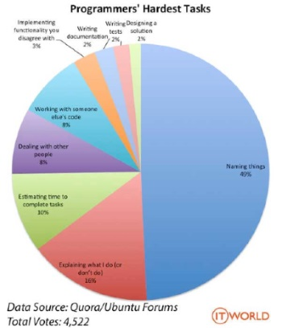

Basic JavaScript
The road thus far...
Having the ability to create something from scratch using only HTML and CSS is a fantastic skill to have, yes? It's rare, but there will be instances in your career where knowledge of--and only knowledge of--these two particular 'languages' will be more than enough to get the job done. As your code base grows and traffic explodes, however, you're going to need a few more tools in your developer's toolbox.
Part of being a front end developer means working with JavaScript. It's an incredibly popular development language used on millions of websites all around the world. You can't swing a metaphorical cat by the tail in the development world without hitting a JavaScript developer.
Now here's the thing. It is of my opinion that HTML and CSS are, in fact, programming languages in the broadest of terms, yes? Yes, they are declarative languages that describe presentation, which puts them in a weird category when compared with other 'proper' programming languages like Java, Swift, Python, C++, etc. However, they are used to write instructions for a computer to execute, which--as far as I'm concerned--makes them a programming language. You could argue semantics all the live long day--and I'm sure there are people on the Internet who would love to drag you down into this hot mess--but the fact is that the real world (e.g. those that do the hiring and firing out there in the corporate world) do consider them real programming languages and, so, you should treat them as such too.
I mention this only because JavaScript is a 'proper' programming language. It is a high-level, dynamic, weak type, prototype-based, interpreted language, which puts it on a whole other level than HTML and CSS. CSS has incorporated some of these ideas with preprocessors, but, even then, you're still using a 'proper' programming language to do the heavy lifting (e.g. JavaScript or Ruby). Your CSS is exported, where it is processed by the preprocessor lanaguage of preference, and the modified CSS file is given back.
JavaScript provides the ability to add interactivity to a website. Again, not to belabor the point, but HTML is structure, CSS is presentation, and JavaScript is behavior.
JavaScript should be kept in a separate file (like you do for CSS) and then referenced in the HTML using the <script> element.
<script src="javascript_file.js"></script>
Where you reference it is a matter for some consideration. JavaScript stops rendering, which can substantially increase page loading times, so, generally speaking, it's a good idea to reference it at the back end of your site near the closing </body> tag. However, if you have JavaScript that is absolutely necessary to render the page proper, then you should reference it in the <head> element.

I'm going to cover this pretty fast and it is--by no means--absolute and complete. Your interaction, involvement, use, etc. is almost entirely driven by how involved you want to get. We're going to cover some basic, vanilla JavaScript stuff now and then--at some point in the future--get into some JavaScript libraries and--if we have time--frameworks. Vanilla JavaScript is a bit harder to work with, but a fundamental understanding of some of the concepts we're going to cover will certainly help you later on down the road if you choose to follow the programmer-centric frontend development path. If, however, you're just looking to get it done and don't really care to understand the 'nuts and bolts' then libraries and frameworks will be more your cup of tea. Both paths are equally valid, each with the opportunity to develop a unique skills set. So, it really is just a question of which one fits your personal approach better.
JavaScript
Variables
In the abstract, variables are simply boxes in which we store data. We can call these boxes just about anything we want and we can store just about any value we like in them. In the more literal sense, however, variables refer--by name--to actual, physical locations in system memory where data is being stored. Programmatically, when you 'declare' a variable and give it a name, you are sectioning off a little chunk of system memory and assigning it an address. The value that you store is associated with that variable name and its contents are kept at that address in memory, right? When you reference a variable in your code, the system knows exactly where to look for that data because you've given that data an assigned location (well, really the system does, but that's neither here nor there).
Naming variables

To create a variable in JavaScript you must start with a name and there are some rules absolutely have to follow and a few conventions that you totally should as well.
The rules:
- A variable name cannot start with a number. It can have a number in it, but it cannot start with a number. 7thGame is illegal; Game7 is perfectly fine.
- A variable name cannot contain a mathematical, logical, or relational operator in it. We'll cover operators a bit later, so, just kind of file that one away for now. blue*sky is illegal as it contains an asterisk, which is the mathematical symbol for multiplication; blueSky is perfectly fine.
- A variable name cannot contain punctuation or special characters with exception. Generally, variables that contain punctuation like commas, semicolons, periods, quotation marks, etc. or special characters like '@,' '#,' '%,' etc. aren't allowed. There are some instances--specifically when working with libraries and frameworks--where some special characters are allowed. jQuery, for instance, uses the '$.' In the context of vanilla JavaScript this is illegal; In jQuery, it is perfectly fine.
- A variable name cannot contain spaces.
- You cannot use a reserved word for a variable name, although, a variable name can contain a reserved word. Reserved words are typically words used to denote some specific action to the interpreter. Keywords, for example, are reserved, so, you can't use 'var', 'break', 'function', 'new', 'return,' etc. A variable named 'var' is illegal as it consists solely of the reserved JavaScript keyword 'var' for variable; A variable named 'var_firstName' is perfectly fine.
- JavaScript variable names are case-sensitive. blackbox is not the same as Blackbox is not the same as BlackBox is not the same as blackBox.
The conventions:
- Be consistent. Different programmers have different styles and use different conventions when naming variables. This is fine. Use what you like, but be consistent in its application. Most Frontend developers use the 'camelCase' notation convention. This is where you capitalize the first letter of each successive and separate word in your variable name. myAge, firstName, etc.
- Be concise. Shorter variable names are better.
- Be semantic. Remember back in our discussion of HTML5 when we talked about how some of the new element names were 'semantic,' meaning they described the content inside them? Works the same here. JavaScript variables should be describable of the content, or value, of the data being stored. It is difficult to tell--at first glance--what a variable named hdl173_2 is referencing. You don't have to do much detective work, however, to figure out what a variable named userName is referencing.
Declaring variables
In JavaScript this is relatively easy.
var city = "Mountain Home";
Let's step through:
- 'var' is our keyword. We are telling the interpreter that a named variable needs to be created.
- 'city' is our variable name. Guess what value this variable is going to reference?
- '=' is our assignment operator. We are associating the variable name of 'city' with a value. The association will stick--provided we don't change it programmatically--until the program, or script, finishes.
- 'Mountain Home' is our value.
Here I am both declaring the variable and assigning a value in the same statement. I could just as easily split this up into two separate statements like so:
var city; city = "Mountain Home";
Variable data types and operators
Well, that's great, but what can I keep in my little boxes and how do I do stuff with them?
The latest ECMAScript standard defines seven different data types.
var nullVariable = null;
var vacantVariable;
var currentYear = 2017;
var myName = "Michael";
To do stuff with these data types we need a way to perform 'operations' on them and, so, enter the operators:
- Arithmetic -
- + (addition)
- - (subtraction)
- * (multiplication)
- / (division)
- % (modulus, or division remainder)
- ++ -- (increment and decrement)
- Assignment -
- = (assignment)
- Comparison -
- == (equal to)
- === (equal to and equal type)
- != (not equal to)
- > (greater than)
- < (less than)
- >= (greater than or equal to)
- <= (less than or equal to)
- Logical -
- && (and)
- || (or)
- ! (not)
A few of these operators do double duty. The '+', for instance, is also used for concatenation, which--essentially--just joins variables--usually character strings--together end-to-end. If I have a variable named firstName and a variable named lastName and I want to output them to look like that person's full name, I can 'concatenate' them using the '+' operator like so:
document.getElementById("fullname").innerHTML= firstName + lastName;
Because the '+' is responsible for two distinct and separate operations, it is referred to as 'overloaded' and it can be kind of a problem, if you're not careful.
JavaScript has dynamic typing, which means that you do not have to specify a data type when you declare a variable and that data types can be changed after a variable has been declared. Provided there are no...ambiguities...the interpreter will try to work with variables as directed. In cases where there is some question--bad syntax, confusing phrasing, etc.--the interpreter will make a judgement call and try to do what it 'thinks' your intentions are, even if that means converting, or recasting, the data type of a variable. As with all things in life, this is both a good and a bad thing. Good in that it means the language is flexible enough to accommodate and adapt to small, simple issues of syntax; bad in that it can have some unintended consequences.
As example:
"5" + 2 --> 52
The '5' is inside quotation marks, which marks it as a string literal. Even though it looks like a number, the interpreter will respect the contents of the string and leave it as is. The number '2,' however, is fair game. The interpreter will look at the overall context of the statement, assume that the '+' is being used to concatenate rather than for addition and recast the number '2' into a string value of "2." It will then perform the concatenation operation resulting in output of "52," or "5" and "2" output end-to-end.
"5" - 2 --> 3
Here there is no ambiguity. The minus sign only has the one function, right? So, the interpreter 'assumes' that you, in fact, want to subtract '2' from '5' and converts the string "5" into the number data type. It then does the math and outputs the result, which is '3.'
"5" * "2" --> 10
Again, there is no ambiguity as to the intent of the statement. The asterisk indicates that you want these values multiplied together and even though they are both strings, the interpreter will recast them as numbers, multiply them together, and then output the result, which is '10.'
Constants
So, variables can be changed and they can be recast, but what about instances where you don't want the variable value to be changed--whether on purpose or on accident?
Constants are--for the most part--inviolate. Variables specifically declared as constants cannot be modified during the normal execution of the program. They are a read-only reference to a value. To declare a constant variable you use the 'const' keyword when you first declare the variable.
const taxRate = .08;
The important distinction here is that this does not mean that the value it holds is immutable. It only means that the variable identifier cannot be reassigned, which makes it seem--again, for the most part--that the constant cannot be changed. There are exceptions where the content of the constant's assigned value can be changed with ease, but that's a discussion much further on down the road.
Event driven programming
So, let's take a small break from that and talk just a bit about event driven programming.
The beauty of using JavaScript (or really any high-level programming language) is its abilty to foster and facilitate an interactive interaction with the end user. Static web sites are fine, but to really engage the end user, you have to provide a little bit of flash and sizzle. In development when we talk of interacting with the end user, we're talking about 'events.'
There are many individual types of 'events,' but all of them fall into two very broad categories:
- Page driven events -Page driven events are typically events that are triggered as the page loads and are typically concerned with preparing the page for display (e.g. slideshows, getting real time information to display, etc.) or for helping make the site function more efficiently (e.g. optimizing images for specific displays, asynchronous data transfer, etc.).
- User driven events - User driven events are events that are triggered by the user and can range from simply changing an image as a user mouses over it, to clicking a button, to changing the content of a element, etc. When we think of interacting with the user it's generally as a response to a user driven event.
Events are considered attributes of elements. They are inserted into the element to define what happens when that element is accessed.
As example, below I have a generic image of a completely black background called 'safe.png.'
<img src="images/safe.png" onmouseover="danger(this)" onmouseout="safe(this)"/>
In my <image> element, I have a few 'event' attributes, specifically, the onmouseover and onmouseout events.
When the user mouses over 'safe.png,' the image will change dynamically. The 'danger()' function will be called (we're going to talk about them shortly, so, stay tuned) and the image is changed to 'danger.png.' When the user mouses out of the element, the safe() function is called, the image reverts back to 'safe.png' and all is well in the world again.

Another common example of a user driven event is the button.
Below I have a generic <div> element with an 'id' of 'testArea' followed by a series of buttons.
<div id ="testArea">Testing...</div> <button onclick="alertBox()">Alert box</button> <button onclick="promptBox()">Prompt box</button> <button onclick="confirmBox()">Confirm box</button>
When a button is clicked, an associated function is called and something happens. For the alert box, an alert box should pop up on the screen. For the prompt box, a prompt is generated asking the user for a name and then a message is generated in my named <div> element. The confirm box is a combination action event as well.
In all cases, I am interacting with the user as a response to a user action (i.e. clicking a button). These interactions are dynamic and do not require the page to be reloaded.
In some instances, I am collecting information from the user, storing it in a variable, and then using that variable to provide user feedback.
A more robust list with examples and practical demonstrations can be found at w3schools.com.
We're definitely going to cover how to do these things (and more than few more things) over the next few weeks, but for now I would like you to think about all the different sites you visit and all the interactive elements contained therein. Some interaction is good. It is an expected and fantastic way to customize your site to create an individual user experience. Some interaction is bad. It will turn a user away from your site fast and, sometimes, for good. So, while it may be neat and otherwise impressive to add a bunch of stuff via JavaScript, it's important to understand that moderation is key. You can totally crack an egg by shooting it with a shotgun, but at what cost?